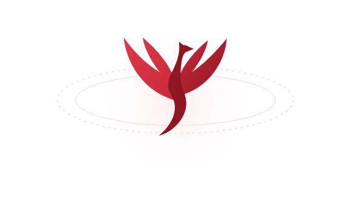

Yetenek & işe alım platformu
Evidence Intelligence Platform
Belge ve çalışma örnekleriyle aday değerlendirme.
Ürün kapsamı ve erişimi ↗AI / PRODUCT ENGINEERING
Web ve Android uygulamaları, SaaS platformları ve yapay zekâ destekli iş akışları geliştiriyoruz. İhtiyacı, kapsamı ve teslim edilecek çıktıyı birlikte netleştirelim.

01 / ÜRÜNLER & PLATFORMLAR
Ödeme takibi, kanıta dayalı işe alım, Bluetooth iletişim, araştırma ve tesis operasyonları. Her ürünün kullanım alanı, teknik kapsamı ve mevcut aşaması kendi notlarında.
Yetenek & işe alım platformu
Belge ve çalışma örnekleriyle aday değerlendirme.
Ürün kapsamı ve erişimi ↗Günlük hayat / Finans
Ödeme özeti, Türkçe arama ve yerel hatırlatmalarla Phoenix Android ödeme takibi.
Ürün kapsamı ve erişimi ↗02 / AI & YAZILIM MÜHENDİSLİĞİ
Modelin kullanacağı bağlamı, erişeceği araçları ve insan onayı gerektiren adımları ayrı tasarlıyoruz. Bu yaklaşımın portföydeki karşılıkları:
01 / CONTEXT
Modelin ihtiyaç duyduğu talimat, veri ve kanıtı düzenlemek. Prompt Operating System çalışmamız bu bağlamın nasıl hazırlanacağını ve çıktıyla nasıl ilişkilendirileceğini ele alıyor.
02 / RETRIEVAL
Anahtar kelime aramasıyla anlamsal benzerliği birlikte kullanmak. Pharos, BM25 ve vektör aramasını kaynak kayıtları, varlık ilişkileri ve değişim takibiyle birleştiriyor.
03 / APPROVAL
Karar gerektiren adımlarda insan onayını akışa dahil etmek. Bungalow OS’ta onay kapılı ajan, rol bazlı yetkilendirme ve denetim kaydı bu yaklaşımın parçaları.
04 / VOYAGERROC TECHNOLOGIES
Bir AI ajanının hangi veriye erişeceği, hangi aracı kullanacağı ve hangi adımda onay isteyeceği ürün tasarımının parçası. Agentic iş akışlarını bu kararlar etrafında ele alıyoruz.
AI-assisted development yaklaşımıyla araştırma, kod ve dokümantasyonda AI araçlarından yararlanıyoruz. Geliştiricinin rolü; mimariyi kurmak, model çıktısını incelemek, entegrasyonları test etmek ve ürünün davranışını anlamak.
Müşteri için kapsam, teslim edilecek çıktı ve kabul ölçütlerinin açık olmasını esas alıyoruz. Geliştirici için veri erişimi, bağımlılıklar ve teknik kararlar anlaşılır olmalı. LLM içeren işlerde değerlendirme senaryolarını (evals) da proje planının bir parçası olarak ele alıyoruz.
Geliştiriciler için iş birliği çerçevesi ↗
Portföyde web erişimi, kapalı test, geliştirme ve kaynak çalışması ayrı belirtilir. Bir sayfanın açılması, bütün ürün akışlarının doğrulandığı anlamına gelmez.
05 / İLETİŞİM
Geliştirmek istediğiniz uygulamayı veya otomasyonu; mevcut araçlarınız, veri kaynaklarınız ve beklediğiniz çıktıyla birlikte anlatın. Portföydeki bir ürün için yazıyorsanız adını belirtin.
İletişim sırasında verilerin nasıl işlendiği: KVKK aydınlatma metni.
DOĞRUDAN İLETİŞİMerol@voyagerroctechnologies.com ↗